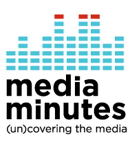

Society of Professional Journalists Convention & National Journalism Conference.
When:
August 27, 2009 - August 29, 2009
Where:
Indianapolis, IN
Website:
http://www.spj.org/convention.asp The Society of Professional Journalists is pleased to announce Roxana Saberi, the freelance journalist imprisoned in Iran from Jan. 31 to May 11, will be the keynote speaker at the Mark of Excellence Awards Luncheon on Friday during convention in Indianapolis.
Nonprofit Software Development Summit, 2009
When:
November 18, 2009 - November 20, 2009
Where:
Oakland, CA The 2009 Nonprofit Software Development Summit will be the third annual convening of people and organizations developing software tools, web applications and other technology to support social justice causes. Bringing together a diverse range of users, developers, technologists, managers, eRiders, integrators and other practitioners who self-identify under the umbrella of “developing nonprofit software”, the 2009 DevSummit will provide an opportunity both to gather as a community and to take stock of the field, while building connections and capacity.
Digital Arts Serice Corps in Quill
Digital Arts Service Corps member Elizabeth Goussetis wrote this great piece about her service at Media Bridges Cincinnati where she’s been developing their youth media program.
For more than 90 years, Quill, the Society of Professional Journalists’ national magazine, has been a respected and sought-after resource for journalists, industry leaders, students and educators on issues central to journalism.
Read the article here.
Alternate ROOTS - Rebirth of a Nation: Using art to navigate the intersection of oppressions
When:
August 11, 2009 - August 16, 2009
Where:
Arden, NC
Website:
http://alternateroots.org This year’s annual meeting theme will be “Re-birth of a Nation: Using art to navigate the intersection of oppressions.” As a phoenix rising from the ashes, America is entering a time of new opportunities for growth, change, and awareness, a re-birthing. These same opportunities parallel Alternate ROOTS’ strategic planning year, as we evaluate and build a stronger foundation for Alternate ROOTS’ future. With change looming ahead we cannot forget our purpose, and understand that we have miles to travel in the work to end all forms of oppression. How can ROOTS re-define its use of art to navigate that intersection? What will it take to activate the collective consciousness of the future?
This year’s theme supports the idea that sustainable communities are needed in order to truly work towards ending oppression, and the idea that sustainability comes in many forms whether environmentally, psychologically, or spiritually “Reduce, Reuse, Recycle” in every sense of the expression. We have the opportunity to reduce our consumption environmentally as well as reduce the ignorance feeding oppression. We have the opportunity to reuse materials and goods as well as reuse the knowledge of our ancestors to strengthen the connection between art and the movement. We can recycle these ideas into constructive images and actions.
PRPD's 2009 Public Radio Programming Conference
When:
September 15, 2009 - September 18, 2009
Where:
Cleveland, OH The 22nd Annual Public Radio Programming Conference is an opportunity for those involved or interested in programming to hone their skills, network with colleagues, find answers to questions and spend four days immersed in the pursuit of excellent content.To keep your travel costs affordable (and green), we have arranged:
1. A week-long transit pass included in your registration fee - unlimited use of RTA including:
a) Roundtrip rail to & from the airport & conference hotel - Easy, non-stop, all-indoors
b) Direct transportation to & from:
o Opening Receptions at Idea Center (WCPN) and House of Blues (WKSU),
o The Moth (Wed. event) at the City Club of Cleveland
The Transmission Project featured on Media Minutes
Check out this look at The Transmission Project featured on the weekly Media Minutes.
Media Minutes is the longest-running syndicated radio program of its kind focused on media policy and reform. Media Minutes tracks the latest industry developments, keeps an eye on Washington policy-makers, and talks to the experts and activists dedicated to changing our media environment for the better.
PublicMediaCamp
When:
October 17, 2009 - October 18, 2009
Where:
Washington, DC On the weekend of October 17th at American University’s campus in Washington DC, NPR, PBS and the AU Center for Social Media will co-host a two-day event that we hope will serve as the kickoff for similar community collaboration events around the country. PublicMediaCamp is going to be organized as an unconference - an event without a rigid, top-down programmatic structure, with the sessions organized by the participants themselves. We’re modeling it on other unconferences like Barcamp and Podcamp, which have successfully spawned similar volunteer-driven events around the world, as well as public media unconferences that have been hosted by Minnesota Public Radio and KUSP in Santa Cruz, CA.
At PublicMediaCamp, we’re hoping to bring together as many as 300 people from around the country - public broadcasters, coders, community technology activists, citizen journalists, neighborhood organizers and the like - to begin this national conversation. It’s hard to say how the two days will be spent; I wouldn’t be surprised if we see techies engaging in code sprints, bloggers developing community journalism projects, community activists proposing station-hosted townhall meetings, etc. But that’s what’s exciting about unconferences – they are each as unique and powerful as the people who decide to participate.
We’ll also be teaching public broadcasters how to host their own their own local PublicMediaCamps, to get the ball rolling in their communities. The Corporation for Public Broadcasting is funding for a number of scholarships for station staff to attend PublicMediaCamp and experience an unconference for themselves. We’re also working closely with Peter Corbett of iStrategyLabs, host of many successful DC-area unconferences, to help us create a “PublicMediaCamp-in-a-box” toolkit that will help stations work with their communities to organize unconferences of their own.
The Association for Education in Journalism and Mass Communication Winter Meeting
When:
December 3, 2009 - December 5, 2009
Where:
Jacksonville, FL
Website:
http://aejmc.org/index.php The Association for Education in Journalism and Mass Communication is a non-profit, educational association of journalism and mass communication faculty, administrators, students and media professionals. Dedicated to promoting the highest standards for education, the Association provides an abundance of resources for news, research and career opportunities, including a multicultural network of practitioners from every discipline of journalism and mass communication.
The CTC VISTA Project has a new name
BOSTON - The CTC VISTA Project has a new name: The Transmission Project. For 9 years the Project has amplified the use of media and technology within more than 100 non-profit organizations and through 300 members volunteering across the country. While diverse in their missions, the Project’s partners all have one thing in common: their use of media and technology to challenge social and economic inequality in communities.
With a new name, the Transmission Project more strongly emphasizes building capacity for equitable and effective use of public media and technology. To facilitate this, a newly created Digital Arts Service Corps recruits AmeriCorps*VISTA members to further develop our nation’s public media and technology infrastructure. These full-time volunteers are serving with community radio stations, media arts and technology centers, rural broadband internet initiatives and others seeking to empower their community through the use of media and technology.
By creating a Digital Arts Service Corps, the talents and organizing skills of committed volunteers can be harnessed to connect people across online communities and amplify America’s independent media voices and visions. Community-driven teams will design tools, social networks and online environments that bolster and stimulate community-building and participation. They will work with information technology specialists and independent media makers to democratize the next generation of broadband and information access.
The launch of the Digital Arts Service Corps marks a new strategic collaboration with the National Alliance for Media Arts & Culture (NAMAC). Together, the Transmission Project and NAMAC hope to advance a movement that integrates national service, public digital infrastructure construction, capacity building for nonprofits and innovative uses of the technological arts in public and community-based organizations.
Housed at the College of Public and Community Service at the University of Massachusetts, Boston, the Transmission Project and its new initiative, the Digital Arts Service Corps, is a grantee of the Corporation for National and Community Service.
Future of Music Coalition Policy Summit 2009
When:
October 4, 2009 - October 6, 2009
Where:
Washington, DC Music, Technology, Policy and Law Goes Back to the Future
Since 2001, FMC has organized seven Policy Summits, each bringing together a spectacular mixture of technologists, attorneys, musicians, managers and industry leaders for compelling and thought-provoking discussions about issues that affect the future of music and the artists who will create it.
On October 4-6, 2009 join FMC at Georgetown University in Washington, DC for a fast-paced, multifaceted, multimedia event that’s sure to be among the most significant music conferences of the year.